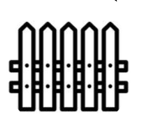

        <main>
            <section class="HomeScren">
                <a class="dot one"></a>
                <a class="dot two"></a>
                <a class="dot tree"></a> 
                <div class="fas fa-map-marker-alt dog1"></div>   
                <div class="poto"></div>             

            </section>

            <section class="butMain">
                <div class= "fille">
                    <button class="Mq"><i class='far fa-folder Allicons'></i></button>
                    <h3>פידבקים</h3>
                </div>

                <div class= "control">
                    <button class="Mq"></button>
                    <h3>בקרה</h3>
                </div>

                <div class= "sound">
                    <button class="Mq"><i class='fas fa-volume-up Allicons'></i></button>
                    <h3>חיבור לשמע</h3>
                </div>

                <div class= "hart">
                    <button class="Mq"></i></button>
                    <h3>מדדי לב</h3>
                </div>

                <div class= "camara">
                    <button class="BigButt"><i i class='fas fa-camera BigIcon'></i></button>
                    <h3>צפיה בזמן אמת</h3>
                </div>
            </section>
        </main>